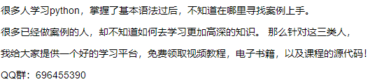
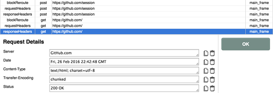
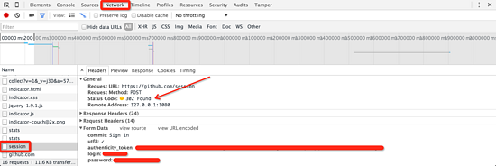

原文连接:https://www.cnblogs.com/7758520lzy/p/12102734.html
1. Cookie 介绍
HTTP 协议是无状态的。因此，若不借助其他手段，远程的服务器就无法知道以前和客户端做了哪些通信。Cookie 就是「其他手段」之一。 Cookie 一个典型的应用场景，就是用于记录用户在网站上的登录状态。


- 用户登录成功后，服务器下发一个（通常是加密了的）Cookie 文件。
- 客户端（通常是网页浏览器）将收到的 Cookie 文件保存起来。
- 下次客户端与服务器连接时，将 Cookie 文件发送给服务器，由服务器校验其含义，恢复登录状态（从而避免再次登录）。
2. requests使用cookie
当浏览器作为客户端与远端服务器连接时，远端服务器会根据需要，产生一个 SessionID，并附在 Cookie 中发给浏览器。接下来的时间里，只要 Cookie 不过期，浏览器与远端服务器的连接，都会使用这个 SessionID；而浏览器会自动与服务器协作，维护相应的 Cookie。
在 requests 中，也是这样。我们可以创建一个 requests.Session ，尔后在该 Session 中与远端服务器通信，其中产生的 Cookie， requests 会自动为我们维护好。
3. POST 表单
post 方法可以将一组用户数据，以表单的形式发送到远端服务器。远端服务器接受后，依照表单内容做相应的动作。
调用 requests 的 POST 方法时，可以用 data 参数接收一个 Python 字典结构。 requests会自动将 Python 字典序列化为实际的表单内容。例如：
import requests
cs_url = 'http://httpbin.org/post'
my_data = {
'key1' : 'value1',
'key2' : 'value2'
}
r = requests.post (cs_url, data = my_data)
print r.content
4. 实际模拟登录 GitHub 试试看
模拟登录的第一步，首先是要搞清楚我们用浏览器登录时都发生了什么。
GitHub 登录页面是 https://github.com/login 。我们首先清空浏览器 Cookie 记录，然后用 Chrome 打开登录页面。填入 Username 和 Password 之后，我们打开 Tamper Chrome 和 Chrome 的元素审查工具（找到 Network 标签页），之后点登录按钮。
在 Tamper Chrome 中，我们发现：虽然登录页面是 https://github.com/login ，但实际接收表单的是 https://github.com/session 。若登录成功，则跳转到 https://github.com/ 首页，返回状态码 200 。

而在 Chrome 的审查元素窗口中，我们可以看到提交给 session 接口的表单信息。内里包含
commit
utf8
authenticity_token
login
password

其中， commit 和 utf8 两项是定值； login 和 password 分别是用户名和密码，这很好理解。唯独 authenticity_token 是一长串无规律的字符，我们不清楚它是什么。
POST 动作发生在与 session 接口交互之前，因此可能的信息来源只有 login 接口。我们打开 login 页面的源码，试着搜索 authenticity_token 就不难发现有如下内容：
<input name="authenticity_token" type="hidden" value="......" />
原来，所谓的 authenticity_token 是明白写在 HTML 页面里的，只不过用 hidden 模式隐藏起来了。为此，我们只需要使用 Python 的正则库解析一下，就好了。
import requests
import re
login_url = 'https://github.com/login'
user = 'user' //具体账号
password = 'password' //具体密码
user_headers = {
'User-Agent' : 'Mozilla/5.0 (Macintosh; Intel Mac OS X 10_9_5) AppleWebKit/537.36 (KHTML, like Gecko) Chrome/48.0.2564.116 Safari/537.36',
'Accept' : 'text/html,application/xhtml+xml,application/xml;q=0.9,image/webp,*/*;q=0.8',
'Accept-Encoding' : 'gzip',
'Accept-Language' : 'zh-CN,zh;q=0.8,en;q=0.6,zh-TW;q=0.4'
}
session = requests.Session()
response = session.get(login_url, headers = user_headers)
pattern = re.compile(r'<input name="authenticity_token" type="hidden" value="(.*)" />')
authenticity_token = pattern.findall(response.content)[0]
login_data = {
'commit' : 'Sign in',
'utf8' : '%E2%9C%93',
'authenticity_token' : authenticity_token,'login' : user,
'password' : password
}
session_url = 'https://github.com/session'
response = session.post(session_url, headers = user_headers, data = login_data)
1. 首先，我们准备好了和 Chrome 一致的 HTTP 请求头部信息。具体来说，其中的 User-Agent 是比较重要的。
2. 仿照浏览器与服务器的通信，我们创建了一个 requests.Session 。
3. 我们用 GET 方法打开登录页面，并用正则库解析到 authenticity_token 。
4. 将所需的数据，整备成一个 Python 字典login_data
5. 最后，用 POST 方法，将表单提交到 session 接口。
6. 最终的结果经由 302 跳转，打开了（ 200 ）GitHub 首页.